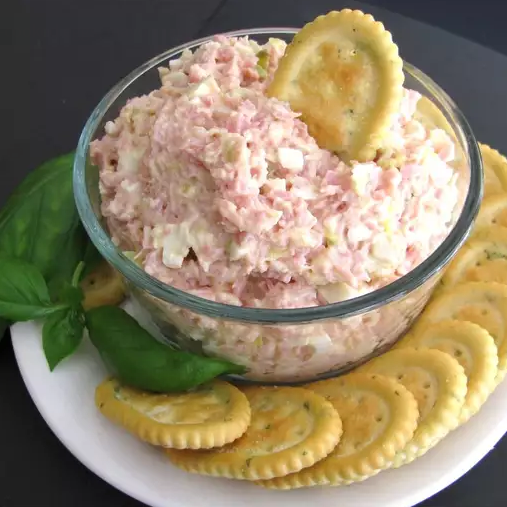

Ham Salad

This ham salad spread with hard-cooked eggs, mayonnaise, and pickle relish is quick and easy to whip up. Serve with assorted crackers.
Ingredients
- 3 cups ground fully cooked ham
- 2 hard cooked eggs, chopped
- 2 tablespoons finely chopped celery
- 4 teaspoons sweet pickle relish
- 2 teaspoons finely chopped onion
- 1 cup mayonnaise
- 1 tablespoon prepared yellow mustard
Steps
- Mix ham, eggs, celery, pickle relish, and onion together in a medium bowl until combined.
- Mix mayonnaise and mustard together in a small bowl; pour over ham mixture and stir to coat.
- Refrigerate until ready to serve.